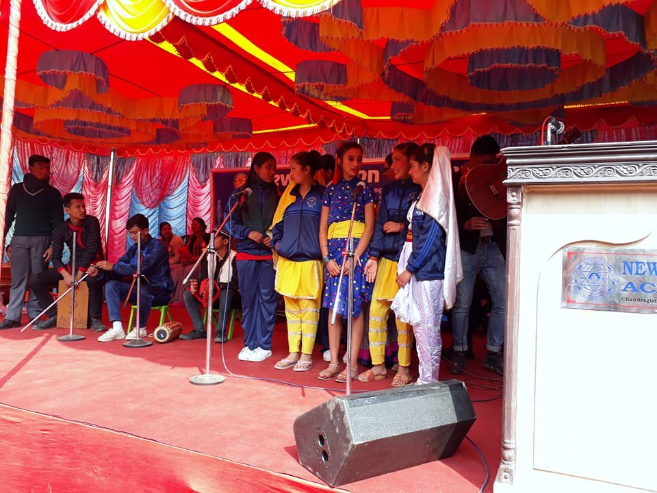
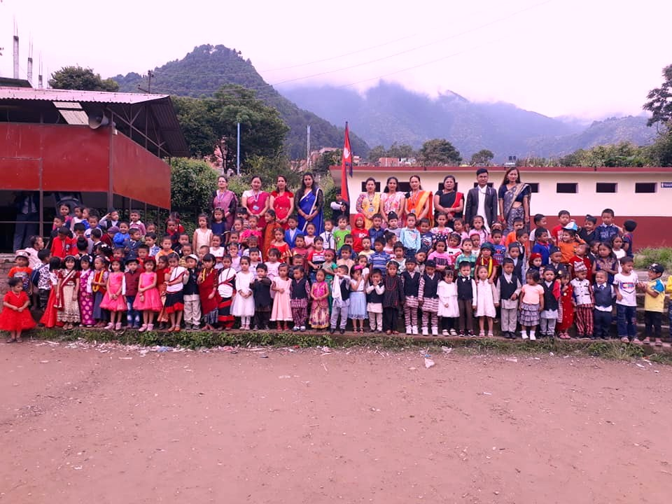
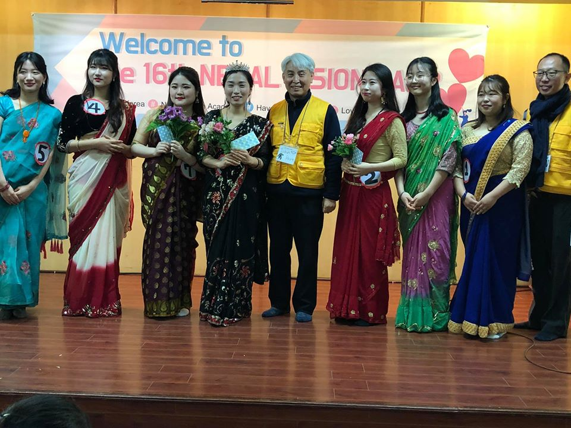
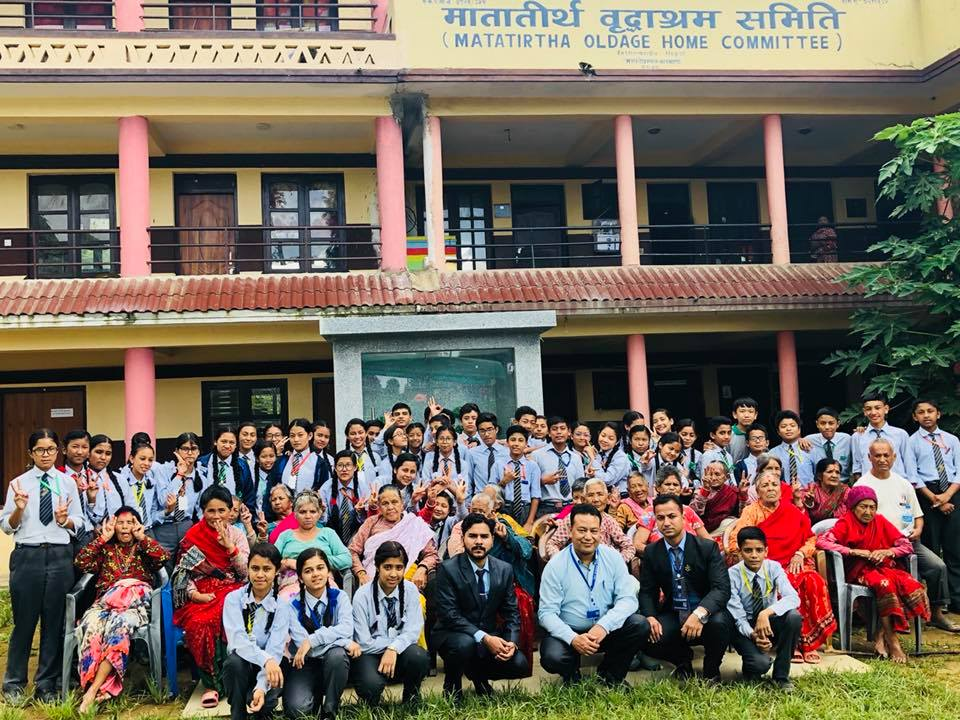
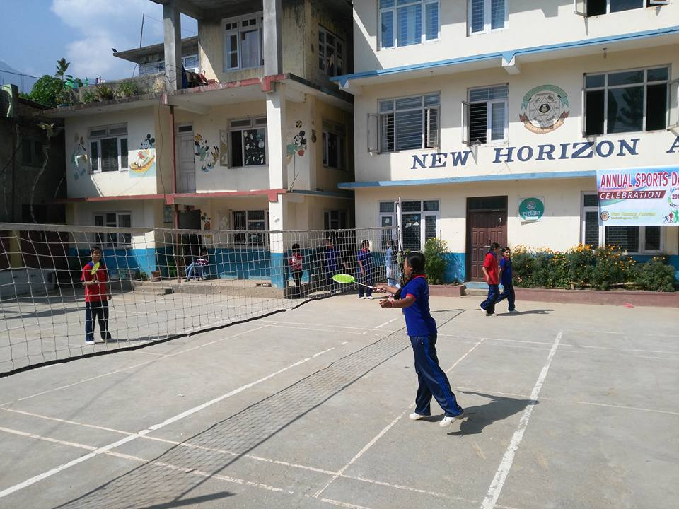

| home | event | gallery | academic calender | contact us |
|---|

Parent's day is held in every two years in NHA.The parent's day held on 2074 B.S. was celebrated in a grand way.The show was anchored by Mrs. Sarada Shrestha and Mr.Harishnath Yogi.First of all,the anchors welcomed the guests.Then national anthem was played.After that,speech programme was held by students and welcome song was performed by students and teachers.Then dance,cultural dress and song performance was performed.Finally,prize was distributed to disciplined,position holder and punctual students as well as to the best singer,best artist,best dancer,best parent,etc.In this way,this day was celebrated.

World Cultural Day was celebrated in May,21.In New Horizon Academy for the fist time world cultural day was celebrated in 2076 B.S.In this day,students were told to wear their cultural dress.As nepal is multi-cultural country,thre is law mentioned in present constitution of Nepal 2072 B.S. to respect all law.So,to respect law and our country's cultural diversity our school conducted this programme.During this day,the school was looking very beautiful.The beautiful scenery of cuyltural diversity was able to win anyone's heart.This day was a memorable event.......

16th VISION CAMP held on 5 Magh,2076 B.S.(19 January,2020 A.D.) was very enjoyable event.Vision Camp is conducted by Koreans for grade 5-10.This picture is taken from vision camp of grade 9 and 10.In this vision camp,the seven vision female members were choosen as candidate for Miss Nepal Competition.The winner was selected on the basis of three rounds.In first round,the candidate were called on stage and their score is determined by their nepali dress and in second round,the candidates were asked to choose a number from 1 to 14 and according to the choosen number they were asked to translate the statement in nepali language.Finally in last round,the candidates were given to use a Nepali kitchen item that we used daily.In this way,score was counted and winner was selected.In this competition,contestant no.7 became MISS POKHARA,contstant no.2 became MISS KATHMANDU and contestant no.6 became MISS NEPAL.This competition was very enjoyable......

ON 2075 B.S.,students of grade 8 were taken to old aged home.It was organized by moral subject teacher Mr.Sudeep Kaushal,computer subject teacher Mr.Harishnath Yogi and the students of grade 8.The students were taken to the old aged home by school bus.When they reached there,a meeting was held with the owner of that place and also we provided things like rice,vegetables,fruits,fruit juice,etc.After that,the students went to visit old people.They cleaned the rooms of old people,they talked with old people and visit there.When the time appear to leave,all students and teachers took a picture with all old people.This event taught students that we should love,care and respect elders.Also it made the old people feel better and happy.This event was a memorable event for all students and teacher who visited there.....
There is sports day in every year in this school.It is generally conducted in the month of Kartik(October-November).It is held for two days.In the sports day of 2075 B.S.,students played very well.There was many games like batminton,football,marathon,tug of war,relay race,volleyball,tresure hunt,quiz contest,spelling contest,water race,hand ball,musical chair,talent show,etc.This was held by the students who passed S.E.E exam on 2074 B.S.This day was very enjoyful..